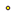

<!doctype html>
<html lang="en">
    <head>
        <meta charset="utf-8">
        <meta http-equiv="X-UA-Compatible" content="IE=edge">
        <meta name="viewport" content="initial-scale=1,user-scalable=no,maximum-scale=1,width=device-width">
        <meta name="mobile-web-app-capable" content="yes">
        <meta name="apple-mobile-web-app-capable" content="yes">
        <link rel="stylesheet" href="css/leaflet.css"><link rel="stylesheet" href="css/L.Control.Locate.min.css">
        <link rel="stylesheet" href="css/qgis2web.css"><link rel="stylesheet" href="css/fontawesome-all.min.css">
        <link rel="stylesheet" href="css/leaflet-search.css">
        <link rel="stylesheet" href="css/filter.css">
<link rel="stylesheet" href="css/nouislider.min.css">
        <link rel="stylesheet" href="css/leaflet-control-geocoder.Geocoder.css">
        <link rel="stylesheet" href="css/leaflet-measure.css">
        <style>
        html, body, #map {
            width: 100%;
            height: 100%;
            padding: 0;
            margin: 0;
        }
        </style>
        <title></title>
    </head>
    <body>
        <div id="map">
        </div>
        <script src="js/qgis2web_expressions.js"></script>
        <script src="js/leaflet.js"></script><script src="js/L.Control.Locate.min.js"></script>
        <script src="js/leaflet.rotatedMarker.js"></script>
        <script src="js/leaflet.pattern.js"></script>
        <script src="js/leaflet-hash.js"></script>
        <script src="js/Autolinker.min.js"></script>
        <script src="js/rbush.min.js"></script>
        <script src="js/labelgun.min.js"></script>
        <script src="js/labels.js"></script>
        <script src="js/leaflet-control-geocoder.Geocoder.js"></script>
        <script src="js/leaflet-measure.js"></script>
        <script src="js/leaflet-search.js"></script>
        <script src="js/tailDT.js"></script>
<script src="js/nouislider.min.js"></script>
<script src="js/wNumb.js"></script>
        <script src="data/Molde_1.js"></script>
        <script src="data/Buildings_2.js"></script>
        <script src="data/Stops_3.js"></script>
        <script>
        var highlightLayer;
        function highlightFeature(e) {
            highlightLayer = e.target;
            highlightLayer.openPopup();
        }
        var map = L.map('map', {
            zoomControl:true, maxZoom:28, minZoom:1
        }).fitBounds([[62.55310573906874,6.9327381571649465],[62.96533477132779,7.854261504360048]]);
        var hash = new L.Hash(map);
        map.attributionControl.setPrefix('<a href="https://github.com/tomchadwin/qgis2web" target="_blank">qgis2web</a> &middot; <a href="https://leafletjs.com" title="A JS library for interactive maps">Leaflet</a> &middot; <a href="https://qgis.org">QGIS</a>');
        var autolinker = new Autolinker({truncate: {length: 30, location: 'smart'}});
        L.control.locate({locateOptions: {maxZoom: 19}}).addTo(map);
        var measureControl = new L.Control.Measure({
            position: 'topleft',
            primaryLengthUnit: 'meters',
            secondaryLengthUnit: 'kilometers',
            primaryAreaUnit: 'sqmeters',
            secondaryAreaUnit: 'hectares'
        });
        measureControl.addTo(map);
        document.getElementsByClassName('leaflet-control-measure-toggle')[0]
        .innerHTML = '';
        document.getElementsByClassName('leaflet-control-measure-toggle')[0]
        .className += ' fas fa-ruler';
        var bounds_group = new L.featureGroup([]);
        function setBounds() {
        }
        map.createPane('pane_GoogleMaps_0');
        map.getPane('pane_GoogleMaps_0').style.zIndex = 400;
        var layer_GoogleMaps_0 = L.tileLayer('https://mt1.google.com/vt/lyrs=m&x={x}&y={y}&z={z}', {
            pane: 'pane_GoogleMaps_0',
            opacity: 1.0,
            attribution: '',
            minZoom: 1,
            maxZoom: 28,
            minNativeZoom: 0,
            maxNativeZoom: 19
        });
        layer_GoogleMaps_0;
        map.addLayer(layer_GoogleMaps_0);
        function pop_Molde_1(feature, layer) {
            layer.on({
                mouseout: function(e) {
                    if (typeof layer.closePopup == 'function') {
                        layer.closePopup();
                    } else {
                        layer.eachLayer(function(feature){
                            feature.closePopup()
                        });
                    }
                },
                mouseover: highlightFeature,
            });
            var popupContent = '<table>\
                    <tr>\
                        <td colspan="2">' + (feature.properties['ID_0'] !== null ? autolinker.link(feature.properties['ID_0'].toLocaleString()) : '') + '</td>\
                    </tr>\
                    <tr>\
                        <th scope="row">ISO</th>\
                        <td>' + (feature.properties['ISO'] !== null ? autolinker.link(feature.properties['ISO'].toLocaleString()) : '') + '</td>\
                    </tr>\
                    <tr>\
                        <td colspan="2">' + (feature.properties['NAME_0'] !== null ? autolinker.link(feature.properties['NAME_0'].toLocaleString()) : '') + '</td>\
                    </tr>\
                    <tr>\
                        <td colspan="2">' + (feature.properties['ID_1'] !== null ? autolinker.link(feature.properties['ID_1'].toLocaleString()) : '') + '</td>\
                    </tr>\
                    <tr>\
                        <td colspan="2">' + (feature.properties['NAME_1'] !== null ? autolinker.link(feature.properties['NAME_1'].toLocaleString()) : '') + '</td>\
                    </tr>\
                    <tr>\
                        <td colspan="2">' + (feature.properties['ID_2'] !== null ? autolinker.link(feature.properties['ID_2'].toLocaleString()) : '') + '</td>\
                    </tr>\
                    <tr>\
                        <th scope="row">NAME_2</th>\
                        <td>' + (feature.properties['NAME_2'] !== null ? autolinker.link(feature.properties['NAME_2'].toLocaleString()) : '') + '</td>\
                    </tr>\
                    <tr>\
                        <td colspan="2">' + (feature.properties['TYPE_2'] !== null ? autolinker.link(feature.properties['TYPE_2'].toLocaleString()) : '') + '</td>\
                    </tr>\
                    <tr>\
                        <td colspan="2">' + (feature.properties['ENGTYPE_2'] !== null ? autolinker.link(feature.properties['ENGTYPE_2'].toLocaleString()) : '') + '</td>\
                    </tr>\
                    <tr>\
                        <td colspan="2">' + (feature.properties['NL_NAME_2'] !== null ? autolinker.link(feature.properties['NL_NAME_2'].toLocaleString()) : '') + '</td>\
                    </tr>\
                    <tr>\
                        <td colspan="2">' + (feature.properties['VARNAME_2'] !== null ? autolinker.link(feature.properties['VARNAME_2'].toLocaleString()) : '') + '</td>\
                    </tr>\
                </table>';
            layer.bindPopup(popupContent, {maxHeight: 400});
        }

        function style_Molde_1_0() {
            return {
                pane: 'pane_Molde_1',
                opacity: 1,
                color: 'rgba(1,77,255,1.0)',
                dashArray: '',
                lineCap: 'butt',
                lineJoin: 'miter',
                weight: 1.0, 
                fill: true,
                fillOpacity: 1,
                fillColor: 'rgba(243,166,178,0.0)',
                interactive: false,
            }
        }
        map.createPane('pane_Molde_1');
        map.getPane('pane_Molde_1').style.zIndex = 401;
        map.getPane('pane_Molde_1').style['mix-blend-mode'] = 'normal';
        var layer_Molde_1 = new L.geoJson(json_Molde_1, {
            attribution: '',
            interactive: false,
            dataVar: 'json_Molde_1',
            layerName: 'layer_Molde_1',
            pane: 'pane_Molde_1',
            onEachFeature: pop_Molde_1,
            style: style_Molde_1_0,
        });
        bounds_group.addLayer(layer_Molde_1);
        map.addLayer(layer_Molde_1);
        function pop_Buildings_2(feature, layer) {
            layer.on({
                mouseout: function(e) {
                    if (typeof layer.closePopup == 'function') {
                        layer.closePopup();
                    } else {
                        layer.eachLayer(function(feature){
                            feature.closePopup()
                        });
                    }
                },
                mouseover: highlightFeature,
            });
            var popupContent = '<table>\
                    <tr>\
                        <td colspan="2">' + (feature.properties['OBJECTID'] !== null ? autolinker.link(feature.properties['OBJECTID'].toLocaleString()) : '') + '</td>\
                    </tr>\
                    <tr>\
                        <td colspan="2">' + (feature.properties['objtype'] !== null ? autolinker.link(feature.properties['objtype'].toLocaleString()) : '') + '</td>\
                    </tr>\
                    <tr>\
                        <th scope="row">bygningsnu</th>\
                        <td>' + (feature.properties['bygningsnu'] !== null ? autolinker.link(feature.properties['bygningsnu'].toLocaleString()) : '') + '</td>\
                    </tr>\
                    <tr>\
                        <th scope="row">bygningsst</th>\
                        <td>' + (feature.properties['bygningsst'] !== null ? autolinker.link(feature.properties['bygningsst'].toLocaleString()) : '') + '</td>\
                    </tr>\
                    <tr>\
                        <th scope="row">kommunenum</th>\
                        <td>' + (feature.properties['kommunenum'] !== null ? autolinker.link(feature.properties['kommunenum'].toLocaleString()) : '') + '</td>\
                    </tr>\
                    <tr>\
                        <th scope="row">kommunenav</th>\
                        <td>' + (feature.properties['kommunenav'] !== null ? autolinker.link(feature.properties['kommunenav'].toLocaleString()) : '') + '</td>\
                    </tr>\
                    <tr>\
                        <td colspan="2">' + (feature.properties['osm_id'] !== null ? autolinker.link(feature.properties['osm_id'].toLocaleString()) : '') + '</td>\
                    </tr>\
                    <tr>\
                        <th scope="row">distance</th>\
                        <td>' + (feature.properties['distance'] !== null ? autolinker.link(feature.properties['distance'].toLocaleString()) : '') + '</td>\
                    </tr>\
                </table>';
            layer.bindPopup(popupContent, {maxHeight: 400});
        }

        function style_Buildings_2_0() {
            return {
                pane: 'pane_Buildings_2',
                radius: 4.0,
                opacity: 1,
                color: 'rgba(35,35,35,1.0)',
                dashArray: '',
                lineCap: 'butt',
                lineJoin: 'miter',
                weight: 1,
                fill: true,
                fillOpacity: 1,
                fillColor: 'rgba(255,77,1,1.0)',
                interactive: true,
            }
        }
        map.createPane('pane_Buildings_2');
        map.getPane('pane_Buildings_2').style.zIndex = 402;
        map.getPane('pane_Buildings_2').style['mix-blend-mode'] = 'normal';
        var layer_Buildings_2 = new L.geoJson(json_Buildings_2, {
            attribution: '',
            interactive: true,
            dataVar: 'json_Buildings_2',
            layerName: 'layer_Buildings_2',
            pane: 'pane_Buildings_2',
            onEachFeature: pop_Buildings_2,
            pointToLayer: function (feature, latlng) {
                var context = {
                    feature: feature,
                    variables: {}
                };
                return L.circleMarker(latlng, style_Buildings_2_0(feature));
            },
        });
        bounds_group.addLayer(layer_Buildings_2);
        map.addLayer(layer_Buildings_2);
        function pop_Stops_3(feature, layer) {
            layer.on({
                mouseout: function(e) {
                    if (typeof layer.closePopup == 'function') {
                        layer.closePopup();
                    } else {
                        layer.eachLayer(function(feature){
                            feature.closePopup()
                        });
                    }
                },
                mouseover: highlightFeature,
            });
            var popupContent = '<table>\
                    <tr>\
                        <td colspan="2">' + (feature.properties['osm_id'] !== null ? autolinker.link(feature.properties['osm_id'].toLocaleString()) : '') + '</td>\
                    </tr>\
                    <tr>\
                        <th scope="row">name</th>\
                        <td>' + (feature.properties['name'] !== null ? autolinker.link(feature.properties['name'].toLocaleString()) : '') + '</td>\
                    </tr>\
                    <tr>\
                        <th scope="row">highway</th>\
                        <td>' + (feature.properties['highway'] !== null ? autolinker.link(feature.properties['highway'].toLocaleString()) : '') + '</td>\
                    </tr>\
                    <tr>\
                        <th scope="row">other_tags</th>\
                        <td>' + (feature.properties['other_tags'] !== null ? autolinker.link(feature.properties['other_tags'].toLocaleString()) : '') + '</td>\
                    </tr>\
                </table>';
            layer.bindPopup(popupContent, {maxHeight: 400});
        }

        function style_Stops_3_0() {
            return {
                pane: 'pane_Stops_3',
                radius: 2.0,
                opacity: 1,
                color: 'rgba(48,18,59,1.0)',
                dashArray: '',
                lineCap: 'butt',
                lineJoin: 'miter',
                weight: 1,
                fill: true,
                fillOpacity: 1,
                fillColor: 'rgba(255,251,1,1.0)',
                interactive: true,
            }
        }
        map.createPane('pane_Stops_3');
        map.getPane('pane_Stops_3').style.zIndex = 403;
        map.getPane('pane_Stops_3').style['mix-blend-mode'] = 'normal';
        var layer_Stops_3 = new L.geoJson(json_Stops_3, {
            attribution: '',
            interactive: true,
            dataVar: 'json_Stops_3',
            layerName: 'layer_Stops_3',
            pane: 'pane_Stops_3',
            onEachFeature: pop_Stops_3,
            pointToLayer: function (feature, latlng) {
                var context = {
                    feature: feature,
                    variables: {}
                };
                return L.circleMarker(latlng, style_Stops_3_0(feature));
            },
        });
        bounds_group.addLayer(layer_Stops_3);
        map.addLayer(layer_Stops_3);
            var abstract = new L.Control({'position':'bottomleft'});
            abstract.onAdd = function (map) {
                this._div = L.DomUtil.create('div',
                'leaflet-control abstract');
                this._div.id = 'abstract'
                    this._div.setAttribute("onmouseenter", "abstract.show()");
                    this._div.setAttribute("onmouseleave", "abstract.hide()");
                    this.hide();
                    return this._div;
                };
                abstract.hide = function () {
                    this._div.classList.remove("abstractUncollapsed");
                    this._div.classList.add("abstract");
                    this._div.innerHTML = 'i'
                }
                abstract.show = function () {
                    this._div.classList.remove("abstract");
                    this._div.classList.add("abstractUncollapsed");
                    this._div.innerHTML = 'This is a map of showing buildings and stops in Molde Municipality which gives information of the distance of each buildings from their closest stops. The distance is calculated in meter and the distance attribute pops up when you hover the mouse over the building points. The distance is linear.';
            };
            abstract.addTo(map);
        var osmGeocoder = new L.Control.Geocoder({
            collapsed: true,
            position: 'topleft',
            text: 'Search',
            title: 'Testing'
        }).addTo(map);
        document.getElementsByClassName('leaflet-control-geocoder-icon')[0]
        .className += ' fa fa-search';
        document.getElementsByClassName('leaflet-control-geocoder-icon')[0]
        .title += 'Search for a place';
        var baseMaps = {};
        L.control.layers(baseMaps,{' Stops': layer_Stops_3,' Buildings': layer_Buildings_2,' Molde': layer_Molde_1,"Google Maps": layer_GoogleMaps_0,}).addTo(map);
        setBounds();
        map.addControl(new L.Control.Search({
            layer: layer_Stops_3,
            initial: false,
            hideMarkerOnCollapse: true,
            propertyName: 'name'}));
        document.getElementsByClassName('search-button')[0].className +=
         ' fa fa-binoculars';
        var mapDiv = document.getElementById('map');
        var row = document.createElement('div');
        row.className="row";
        row.id="all";
        row.style.height = "100%";
        var col1 = document.createElement('div');
        col1.className="col9";
        col1.id = "mapWindow";
        col1.style.height = "99%";
        col1.style.width = "80%";
        col1.style.display = "inline-block";
        var col2 = document.createElement('div');
        col2.className="col3";
        col2.id = "menu";
        col2.style.display = "inline-block";
        mapDiv.parentNode.insertBefore(row, mapDiv);
        document.getElementById("all").appendChild(col1);
        document.getElementById("all").appendChild(col2);
        col1.appendChild(mapDiv)
        var Filters = {"distance": "real"};
        function filterFunc() {
          map.eachLayer(function(lyr){
          if ("options" in lyr && "dataVar" in lyr["options"]){
            features = this[lyr["options"]["dataVar"]].features.slice(0);
            try{
              for (key in Filters){
                keyS = key.replace(/[^a-zA-Z0-9_]/g, "")
                if (Filters[key] == "str" || Filters[key] == "bool"){
                  var selection = [];
                  var options = document.getElementById("sel_" + keyS).options
                  for (var i=0; i < options.length; i++) {
                    if (options[i].selected) selection.push(options[i].value);
                  }
                    try{
                      if (key in features[0].properties){
                        for (i = features.length - 1;
                          i >= 0; --i){
                          if (selection.indexOf(
                          features[i].properties[key])<0
                          && selection.length>0) {
                          features.splice(i,1);
                          }
                        }
                      }
                    } catch(err){
                  }
                }
                if (Filters[key] == "int"){
                  sliderVals =  document.getElementById(
                    "div_" + keyS).noUiSlider.get();
                  try{
                    if (key in features[0].properties){
                    for (i = features.length - 1; i >= 0; --i){
                      if (parseInt(features[i].properties[key])
                          < sliderVals[0]
                          || parseInt(features[i].properties[key])
                          > sliderVals[1]){
                            features.splice(i,1);
                          }
                        }
                      }
                    } catch(err){
                    }
                  }
                if (Filters[key] == "real"){
                  sliderVals =  document.getElementById(
                    "div_" + keyS).noUiSlider.get();
                  try{
                    if (key in features[0].properties){
                    for (i = features.length - 1; i >= 0; --i){
                      if (features[i].properties[key]
                          < sliderVals[0]
                          || features[i].properties[key]
                          > sliderVals[1]){
                            features.splice(i,1);
                          }
                        }
                      }
                    } catch(err){
                    }
                  }
                if (Filters[key] == "date"
                  || Filters[key] == "datetime"
                  || Filters[key] == "time"){
                  try{
                    if (key in features[0].properties){
                      HTMLkey = key.replace(/[&\/\\#,+()$~%.'":*?<>{} ]/g, '');
                      startdate = document.getElementById("dat_" +
                        HTMLkey + "_date1").value.replace(" ", "T");
                      enddate = document.getElementById("dat_" +
                        HTMLkey + "_date2").value.replace(" ", "T");
                      for (i = features.length - 1; i >= 0; --i){
                        if (features[i].properties[key] < startdate
                          || features[i].properties[key] > enddate){
                          features.splice(i,1);
                        }
                      }
                    }
                  } catch(err){
                  }
                }
              }
            } catch(err){
            }
          this[lyr["options"]["layerName"]].clearLayers();
          this[lyr["options"]["layerName"]].addData(features);
          }
          })
        }
            document.getElementById("menu").appendChild(
                document.createElement("div"));
            var div_distance = document.createElement("div");
            div_distance.id = "div_distance";
            div_distance.className = "slider";
            document.getElementById("menu").appendChild(div_distance);
            var lab_distance = document.createElement('div');
            lab_distance.innerHTML  = 'distance: <span id="val_distance"></span>';
            lab_distance.className = 'filterlabel';
            document.getElementById("menu").appendChild(lab_distance);
            var reset_distance = document.createElement('div');
            reset_distance.innerHTML = 'clear filter';
            reset_distance.className = 'filterlabel';
            lab_distance.className = 'filterlabel';
            reset_distance.onclick = function() {
                sel_distance.noUiSlider.reset();
            };
            document.getElementById("menu").appendChild(reset_distance);
            var sel_distance = document.getElementById('div_distance');
            noUiSlider.create(sel_distance, {
                connect: true,
                start: [2.405077999288362, 7112.685416795663],
                range: {
                min: 2.405077999288362,
                max: 7112.685416795663
                }
            });
            sel_distance.noUiSlider.on('update', function (values) {
            val_distance = document.getElementById('val_distance');
            val_distance.innerHTML = values.join(' - ');
                filterFunc()
            });
        </script>
    </body>
</html>
